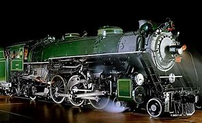

Early History
Stockton and Darlington special inaugural train 1825: six wagons of coal, directors coach, then people in wagons.
Trains are an evolution of wheeled wagons running on stone wagonways, the earliest of which were built by Babylon circa 2,200 BCE.Starting in the 1500s, wagonways were introduced to haul material from mines; from the 1790s, stronger iron rails were introduced.Following early developments in the second half of the 1700s, in 1804 a steam locomotive built by British inventor Richard Trevithick powered the first ever steam train.Outside of coal mines, where fuel was readily available, steam locomotives remained untried until the opening of the Stockton and Darlington Railway in 1825. British engineer George Stephenson ran a steam locomotive named Locomotion No. 1 on this 40-kilometer (25-mile) long line, hauling over 400 passengers at up to 13 kilometers per hour (8 mph). The success of this locomotive, and Stephenson's Rocket in 1829, convinced many of the value in steam locomotives, and within a decade the stock market bubble known as "Railway Mania" started across the United Kingdom.

USA railroads
News of the success of steam locomotives quickly reached the United States, where the first steam railroad opened in 1829.American railroad pioneers soon started manufacturing their own locomotives, designed to handle the sharper curves and rougher track typical of the country's railroads.

EU railroads
The other nations of Europe also took note of British railroad developments, and most countries on the continent constructed and opened their first railroads in the 1830s and 1840s, following the first run of a steam train in France in late 1829.[14] In the 1850s, trains continued to expand across Europe, with many influenced by or purchases of American locomotive designs.Other European countries pursued their own distinct designs. Around the world, steam locomotives grew larger and more powerful throughout the rest of the century as technology advanced.

Railroads throughout the World
Trains first entered service in South America, Africa, and Asia through construction by imperial powers, which starting in the 1840s built railroads to solidify control of their colonies and transport cargo for export.In Japan, which was never colonized, railroads first arrived in the early 1870s. By 1900, railroads were operating on every continent besides uninhabited Antarctica.